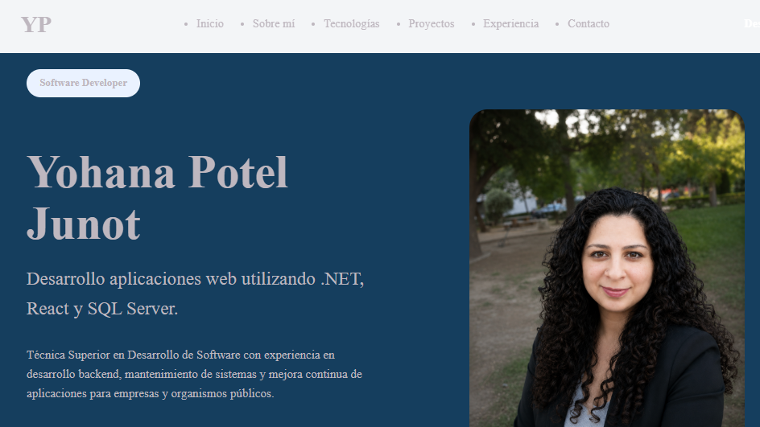
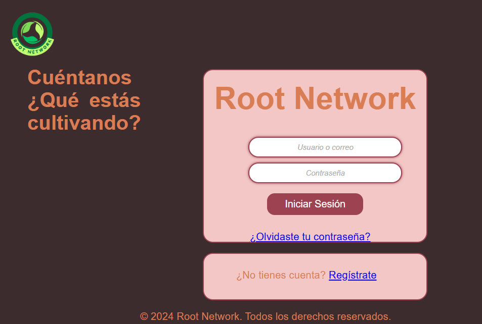
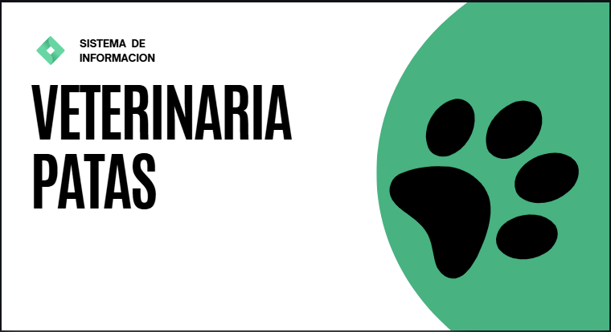

Backend
- C#
- .NET
- ASP.NET
- APIs REST
Software Developer
Técnica Superior en Desarrollo de Software con experiencia en desarrollo backend, mantenimiento de sistemas y mejora continua de aplicaciones para empresas y organismos públicos.

Soy Técnica Superior en Desarrollo de Software con experiencia en desarrollo backend, mantenimiento y mejora continua de aplicaciones. Disfruto analizar problemas, comprender las necesidades del negocio y desarrollar soluciones que sean funcionales, escalables y fáciles de mantener.
A lo largo de mi experiencia profesional participé en proyectos para empresas y organismos públicos, colaborando con equipos de desarrollo en la implementación de nuevas funcionalidades, resolución de incidencias y evolución de sistemas existentes.
Actualmente continúo perfeccionando mis conocimientos mediante el desarrollo de proyectos personales y la formación continua. Busco incorporarme a un equipo donde pueda aportar valor, asumir nuevos desafíos y seguir creciendo como desarrolladora de software.
Estas son las principales herramientas y tecnologías que utilizo para desarrollar aplicaciones web modernas.
Estos proyectos reflejan mi aprendizaje, mi forma de desarrollar software y mi interés por seguir creciendo profesionalmente. Todos cuentan con código propio y representan diferentes desafíos técnicos.

Sitio web desarrollado para presentar mi perfil profesional, experiencia y proyectos utilizando un diseño moderno, responsive y minimalista.

Aplicación Full Stack desarrollada durante mi formación, permitiendo la interacción entre usuarios mediante publicaciones y autenticación.

Sistema desarrollado en Python para gestionar turnos y la información de pacientes y veterinarios, aplicando conceptos de programación, lógica y gestión de datos.
Participé en el desarrollo, mantenimiento y evolución de aplicaciones empresariales, colaborando con equipos de desarrollo en la implementación de nuevas funcionalidades y mejoras continuas.
Participé en el mantenimiento, evolución y mejora continua de aplicaciones utilizadas por empresas y organismos públicos, trabajando sobre sistemas en producción y colaborando con equipos multidisciplinarios.
Actualmente me encuentro en búsqueda de nuevas oportunidades como Software Developer. Si creés que mi perfil puede aportar valor a tu equipo, estaré encantada de conversar.
Enviar Email